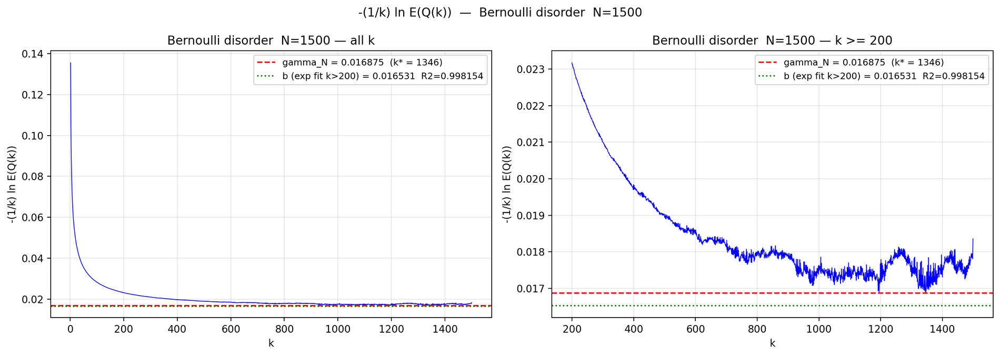

Publication · Advances in Nonlinear Analysis
Finite-volume eigenfunction correlators for the one-dimensional Anderson model: a numerical study (with E. Mei, N. Shaw, Y.M. Tang, S. Vargas Loaiza, X. Wang). Published in Advances in Nonlinear Analysis, vol. 15 (2026). doi:10.1515/anona-2025-0198
A quantum particle on the lattice \( \mathbb{Z} \) is governed by the discrete Schrödinger operator \( H_\omega = \Delta + V_\omega \), with the potential \( V_\omega(n) \) drawn i.i.d. at each site. Turning on that disorder does something dramatic: eigenstates that would otherwise spread across the whole line become exponentially localized. This project answers the quantitative question, not just that states localize but how fast, and with what guaranteed error.
I work with the eigenfunction correlator \( Q(k) \), which controls transport, and estimate the localization rate from a finite-volume model. The main analytic statement is a Hoeffding-type bound comparing the true mean \( q_N(k) = \mathbb{E}\,Q(k) \) with its Monte Carlo estimate \( \tilde q_{N,K}(k) \), at every distance \( k \) at once: for \( K \) disorder samples,
\[ \mathbb{P}\!\left( \max_{1 \le k \le N} \big|\, q_N(k) - \tilde q_{N,K}(k) \,\big| \ge \varepsilon \right) \le 2N\,e^{-2K\varepsilon^2}, \]so the sample size for a target accuracy is fixed in advance rather than hoped for afterward. Solve for \( \varepsilon \) and the lattice size only survives inside a logarithm, which is why it’s the sample count, not the lattice size, that sets the error.

Numerically I estimate the rate across Bernoulli, discrete-uniform, and continuous-uniform disorder. The eigenproblem is tridiagonal, so I never build the dense matrix, and I parallelize over the independent disorder configurations to reach \( N = 1500 \) with enough samples for the error bars above. The singular Bernoulli case sits at the edge of the theory, and the Monte Carlo bound is exactly what keeps it honest.
The published version sets that edge case beside the smooth continuous-uniform law at the same variance. The two decay rates track each other closely, and both climb almost linearly as the variance grows. Over the range we tested, how much randomness the medium carries matters far more than the shape it comes in.
Along the way, I got to present the project at MAA MathFest in Boston, at the Texas High School Mathematics Research Conference at Texas A&M, and at a seminar during Ross, all in 2026.
paper try it live MathFest poster talk slides Advances in Nonlinear Analysis · published